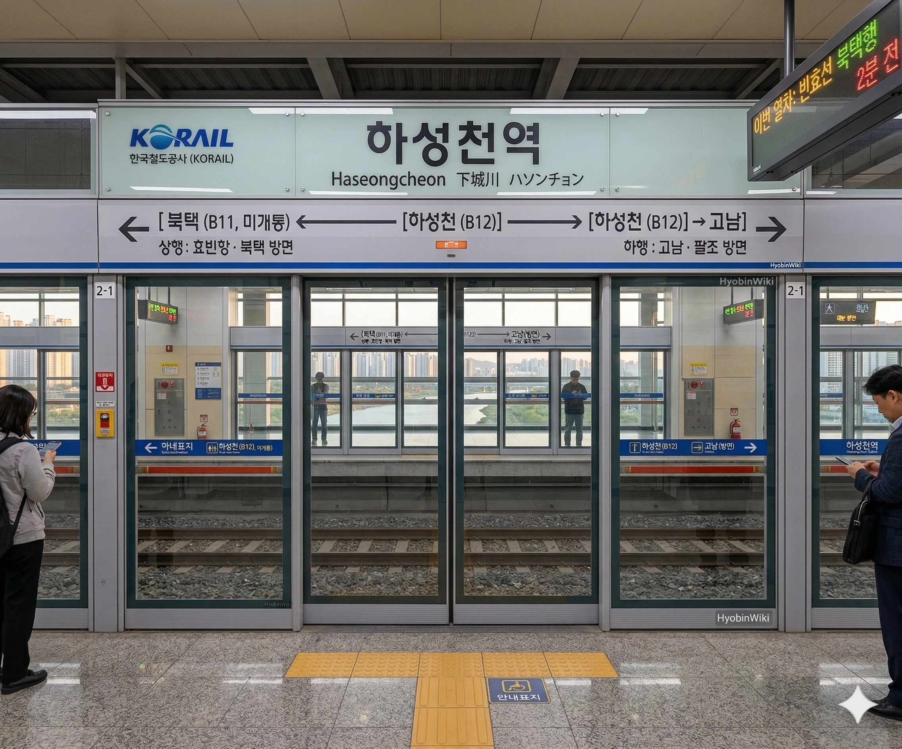

빈효선 광역전철 B12번 및 창전선 C14번(예정). 효빈광역시 동구 덕현동 634 소재에 위치한 역이다.
현재는 빈효선 광역전철만 운행 중이나, 향후 창전선 1단계 구간(팔조~하성천)이 개통되면 환승역이 될 예정이다. 창전선은 하성천역을 시종착역으로 하여 우선 개통될 계획이다.
효빈광역시 동구 덕현동 일대를 담당하는 역이다. 역명은 역 인근을 흐르는 지방 하천인 **하성천**에서 따왔다.
창전선 1단계 구간의 종착역으로 계획되어 있다. 1단계 구간 개통 시 창전구와 청엽구에서 넘어오는 승객들이 빈효선으로 환승하여 효빈항이나 타 지역으로 이동하는 주요 환승 거점이 될 것으로 보인다. 차후 2단계 구간(하성천~시청)이 착공되면 중간역으로 전환될 예정이다.
|
빈
C
하성천역 출구 정보
|
||
|---|---|---|
| 번호 | 주요 시설 및 방향 | 비고 |
| 1 | 덕현7동행정복지센터, 신곡초등학교, 원내초등학교, 산언초등학교 | 학교 밀집 지역 |
| 2 | 창전선 하성천역사 (공사중), 하성천 수변공원 | |
주거 지역 배후 수요 덕분에 이용객은 꾸준한 편이다. 매년 소폭 상승 중이며 2024년에는 일평균 5,000명 돌파를 눈앞에 두고 있다. 향후 창전선 개통 시 환승 수요가 더해져 이용객이 급증할 것으로 예상된다.

| 덕현중앙 (미개통) ↑ | ||||
| 하 | ㅣ | ㅣ | 상 | |
| ↓ 북택 | ||||
| 상 | 빈 빈효선 광역전철 | 효빈항 방면 |
| 하 | 빈 빈효선 광역전철 | 약산 · 궁하 · 천주 · 고남 방면 |
| 우 택 (예정) ↑ | ||||
| 하 | ㅣ | ㅣ | 상 | |
| 시종착역 (2단계 미개통) | ||||
| 상 | C 창전선 | 팔조 · 신창전 · 우택 방면 |
| 하 | C 창전선 | 당역 종착 |
기존 버스 노선 외에 창전선 공사와 함께 역사 주변 도로 정비가 진행 중이다.
빈효선 광역전철 구간 중 가장 경치가 좋은 곳 중 하나로 꼽힌다. 역에서 내리자마자 하성천 산책로가 연결되어 있어, 퇴근길에 잠시 내려 하천 바람을 쐬고 가는 주민들이 많다.
현재는 이용객 수가 평범한 수준이지만, **창전선** 1단계 구간(팔조~하성천)의 시종착역으로 확정되면서 지역 내 기대감이 매우 높다. 창전선이 개통되면 창전구, 청엽구 지역에서 넘어오는 승객들이 빈효선으로 환승해 도심이나 외곽으로 이동하는 핵심 관문 역할을 수행할 것으로 보인다.
빈효선 하성천역의 역번호는 **B12번**인데, 전 역인 전덕역은 **B10번**이다. 중간의 **B11번**이 비어있는 이유는 두 역 사이에 건설 중인 **덕현중앙역(B11)**이 아직 개통되지 않았기 때문이다. 덕현중앙역은 2029년 2월 2일 5호선과 동시 개통될 예정이며, 현재 빈효선 열차는 해당 구간을 무정차 통과한다.